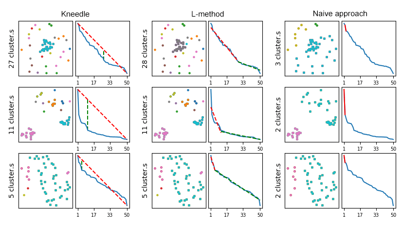

DESCRIPTIVE CLUSTERING
Descriptive clustering or DesC is a parameter free clustering algorithm for data description written in Python. I developed this algorithm for my computer science master thesis in 2019. It's based on Scipy hierarchical clustering for cluster creation and on knee detection for automatically choosing the number of clusters to build. The tool extends the default Scikit leran model so it's fully compatible with all the Scikit learn tools.
